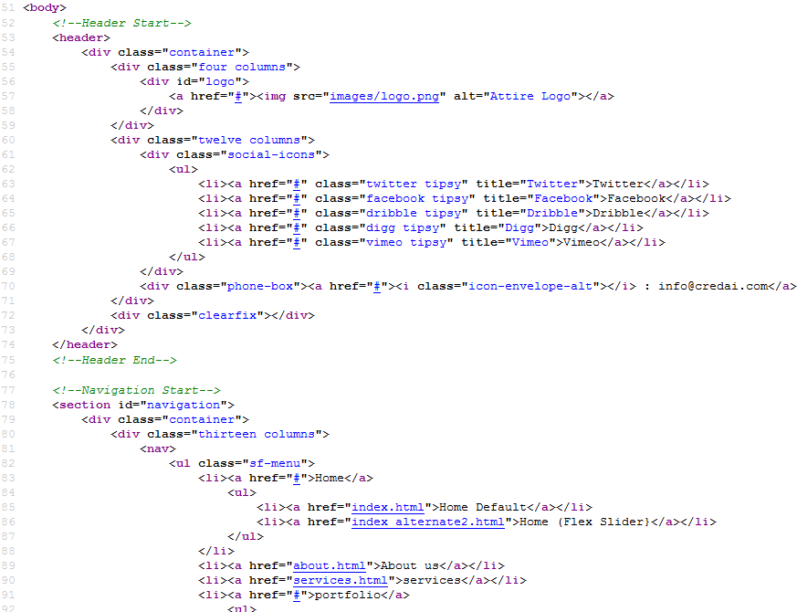
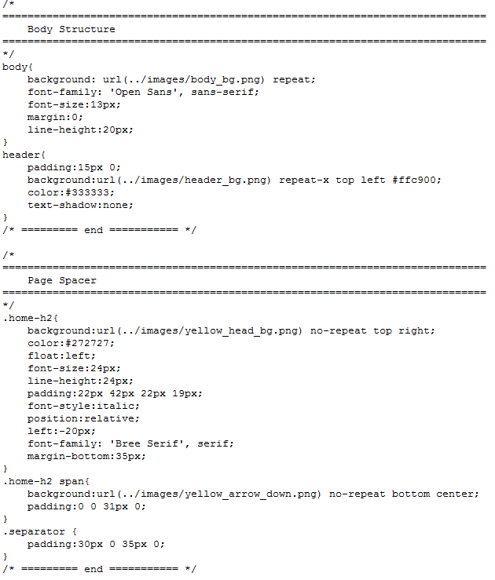

Created: December 15, 2012
Email: qubit.nanotechnology@gmail.com
Thank you for purchasing my theme. If you have any questions that are beyond the scope of this help file, please feel free to email via my user page contact form here. Thanks so much!
This theme comes with 5 color skins. The psd included in the download folder may be different from html page because the psd are designed just for reference and some colors and design section are updated according to overall page requirements.
This theme comes with 1 main column. The column is nested within a div with the id of "wrapper". The general template structure is the same throughout the template. Here is the general structure:

If you would like to edit the color, font and style of that element, you would do the following:
Find the appropriate style that needs to be edited
I.E: The font, color etc... of the Headline needs to be changed
.intro-txt {
color: #4e546a;
text-transform: uppercase;
font-size: 24px;
font-weight: bold;
font-family: Verdana, Arial, Helvetica, sans-serif;
}
To ensure that your new styles are applied, make sure that they carry enough "weight" and that there isn't a style lower in the CSS file that is being applied after yours.
I'm using 1 CSS files in this theme: "style.css" - "style.css" contains all general styling, such as colors, font-sizes, etc. but also all of the specific stylings for the page.
There are other 2 CSS files included but they are not important for you. "fonts.css" only contains css related to template fonts.
The "diapo.css" only contains css for home page slider.
Note: There are some files that you don't need to edit as there are for layouting purposs, so don't bother about that..
The "style.css" file is separated into sections using css comments like below
/* ============================================================================= HTML5 Boilerplate ============================================================================= */.
If you would like to edit a specific section of the site, simply find the appropriate label in the CSS file, and then scroll down until you find the appropriate style that needs to be edited.
I.E. you want to change the header height:
/* HEADER */
header { make changes here.
}
This theme imports three Javascript files.
<script> $(document).ready(function() {
$('#camera_wrap_1').camera({
height: '30%',
easing: 'easeInOutExpo',
thumbnails: true
});
}); </script>
If you got problems with this script visit http://www.pixedelic.com/plugins/diapo/.
//INITIALIZES LIGHTBOX PLUGIN
$(document).ready(function() {
$("a[rel^='prettyPhoto']").prettyPhoto({
opacity:0.80,
default_width:500,
default_height:344,
theme:'dark_rounded',
hideflash:false,
modal:false,
showTitle: false,
});
});
I've included 2 psds with this theme:
To change the color or images of any section just open the relevant psd file and save it on the theme image folder.
I've used the following images, icons or other files as listed.
Once again, thank you so much for purchasing this theme. As I said at the beginning, I'd be glad to help you if you have any questions relating to this theme. No guarantees, but I'll do my best to assist. If you have a more general question relating to the themes on ThemeForest, you might consider visiting the forums and asking your question in the "Item Discussion" section.
www.mannatstudio.com